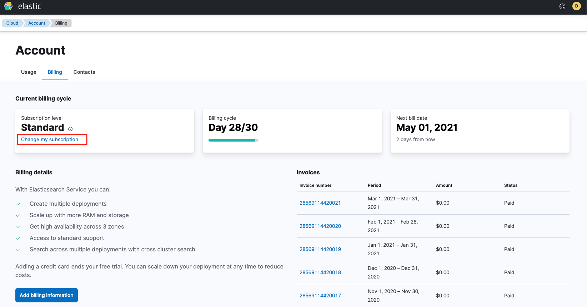
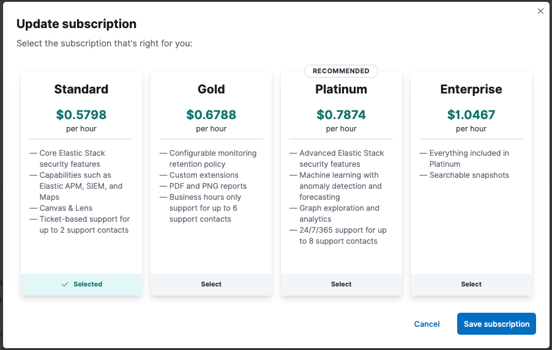
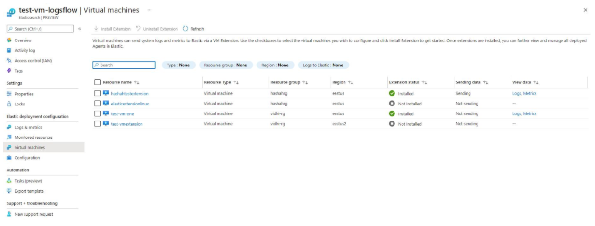
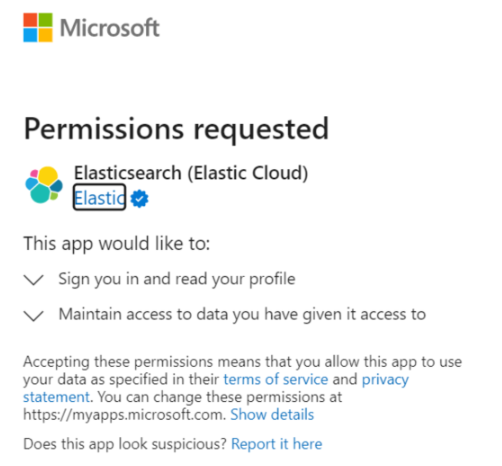

Native Azure integrationedit
The Elastic Cloud native Azure integration allows you to deploy managed instances of the Elastic Stack directly in Azure, through the Azure integrated marketplace. The integration brings the following benefits:
-
Easy deployment for managed Elastic Stack instances
Elastic Stack instances managed by Elastic are deployed directly from the Azure console. This provides the complete Elastic Stack experience with all commercial features.
-
Integrated billing
You are billed directly to your Azure account; no need to configure billing details in Elastic.
-
Easy consolidation of your Azure logs in Elastic
Use a single-step setup to ingest logs from your Azure services into the Elastic Stack.
Check the following sections to learn more:
-
Getting started
- How do I get started?
- What is the pricing for this offer?
- Which Azure regions are supported?
- Which Elastic Cloud subscription levels are available?
- How can I change my Elastic Cloud subscription level?
- Can I subscribe using an email address from another Elastic account?
- Is the Elasticsearch native integration connected with Azure user management?
- I already have an Elastic Cloud account, can I use this integration?
- Can I sign up for an Elastic Cloud trial account and then convert to the Azure Elasticsearch native integration?
- Does Elasticsearch get deployed into my tenant in Azure?
- What Azure tenant information does Elastic have access to?
- What other methods are available to deploy Elasticsearch?
- How do I migrate my data from the classic Azure marketplace account to the native integration?
-
Managing your Elastic Cloud deployment
-
Configuring logs and metrics
-
Troubleshooting
-
Support
Getting startededit
- How do I get started with Elastic Cloud?
-
Elastic Cloud is available as an offering through the Azure console.
Prerequisites
There are a few requirements to check before setting up an Elastic Cloud deployment:
- In Azure your account role for the subscription is set as Owner or Contributor. For details and steps to assign roles, check Permission to purchase in the Azure documentation.
- You cannot use an email address that already has an Elastic Cloud account. Use a different Azure account to set up the Elasticsearch resource, or contact the Elastic Support Team for assistance.
- You must have a credit card registered on your Azure subscription. If you have a non-payment subscription, such as a Virtual Studio Subscription, you can’t create an Elastic Cloud deployment. Refer to the Azure Purchase errors troubleshooting documentation for more information.
-
In order to single sign-on into your Elastic Cloud deployment from Azure you need to request approval from your Azure administrator.

Getting started
Access Elastic Cloud from Azure in two ways:
-
Search for
elasticin the Azure Search bar. Under the Services menu, the Elasticsearch (Elastic Cloud link opens a page that guides you through deploying the Elastic Stack. -
Search for
elasticin the Azure Search bar. Under the Marketplace menu, the Elastic Cloud (Elasticsearch Service) link opens a page that guides you through deploying the Elastic Stack.
When you create an Elastic Cloud deployment, an Elastic Stack cluster is created for you. The size of this deployment is 16GB of RAM and 560GB of storage, across two availability zones for redundancy. The size of the deployment, both RAM and storage, is changed directly in the Elastic console. Usage charges are based on the deployment size, so size your instance efficiently. The deployment defaults to the latest available version of the Elastic Stack. Check our Version policy to learn more about when new versions are made available and old versions are removed from service.
- What is the pricing for this offer?
-
Pricing is pay-as-you-go per hour for each Elastic Cloud deployment created. Note that there is no free trial period for the offering. Charges are applied to your Azure bill at the end of the month. Use the Elastic Cloud Pricing Calculator to size a deployment and view the corresponding hourly rate.
Elastic charges include:
- Which Azure regions are supported?
- Here is the list of available Azure regions supported in Elastic Cloud.
- Which Elastic Cloud subscription levels are available?
- The subscription defaults to the Enterprise subscription, granting immediate access to advanced Elastic Stack features like machine learning, and premium support response time SLAs. Elastic Cloud offers a number of different subscription levels.
- How can I change my Elastic Cloud subscription level?
-
Modify your subscription level on the billing page in the Elastic console.
- Select a deployment to open the deployment overview page.
- Select the Advanced Settings link to access your deployment in the Elastic Cloud console.
- In the Elastic Cloud console, select your account avatar icon at the top of the page, and then choose Account & Billing.
-
Select the Billing tab and choose Change my subscription.
 -
Select the subscription level that you’d like.

- Can I subscribe using an email address from another Elastic account?
- Your email address is associated with only one Elastic account. For a workaround, check Sign up using an email address from another Cloud account.
- Is the Elasticsearch native integration connected with Azure user management?
-
No. Elastic is not currently integrated with Azure user management. Azure users who deploy Elasticsearch on Azure view and manage their own cluster through the Cloud console. Other Azure users in the same tenant cannot access clusters through the Cloud console other than those that they themselves created.
When trying to access resources such as Elasticsearch, Kibana, Enterprise Search, or APM in a deployment that was created by another Azure user, the following error is shown:

Share deployment resources directly with other Azure users by configuring Active Directory single sign-on with the Elasticsearch cluster.
- I already have an Elastic Cloud account, can I use this integration?
- Yes. If you already have an Elastic Cloud account with the same email address as your Azure account you may need to contact support@elastic.co.
- Can I sign up for an Elastic Cloud trial account and then convert to the Azure Elasticsearch native integration?
-
Yes. You can start a free Elasticsearch Service trial and then convert your account over to Azure. There are a few requirements:
- Make sure when creating deployments in the trial account you specify Azure as the cloud provider.
- To convert your trial to the Azure marketplace you need to create a deployment in the Azure console. Just delete the new deployment if you don’t need it. After you create the new deployment your marketplace subscription is ready.
- Any deployments created during your trial won’t show up in the Azure console, since they weren’t created in Azure, but they are still accessible through the Elasticsearch Service Console and you are billed for their usage.
- Does Elasticsearch get deployed into my tenant in Azure?
- No. Elasticsearch resources deployed in an Azure tenant are managed by Elastic. The management capabilities associated with this tenant are the same as used to run Elastic’s managed service, which also allows users to deploy on Azure.
- What Azure tenant information does Elastic have access to?
-
After you subscribe to Elastic Cloud through the native Azure integration, Elastic has access to the following Azure tenant information:
- Data defined in the marketplace Saas fulfillment Subscription APIs.
-
The following additional data:
- Marketplace subscription ID
- Marketplace plan ID
- Azure Account ID
- Azure Tenant ID
- Company
- First name
- Last name
- Country
Elastic can also access data from native integration features, including resource and activity log data. This data is available to Elastic only if you enable it. By default, Elastic does not have access to this information.
- What other methods are available to deploy Elasticsearch?
-
Use any of the following methods:
Official Azure SDKs
Other methods
- The Azure console
- Azure Terraform
- The Azure CLI
- The Azure REST API
- PowerShell
- The Elastic Cloud console
- The Elastic Cloud REST API
- The Elastic Cloud command line tool
- The Elastic Cloud Terraform provider
- How do I migrate my data from the classic Azure marketplace account to the native integration?
-
First create a new account configured with Azure native integration, then perform the migration as follows:
- From your classic Azure marketplace account, navigate to the deployment and configure a custom snapshot repository using Azure Blog Storage.
- Using the newly configured snapshot repository, create a snapshot of the data to migrate.
- Navigate to Azure and log in as the user that manages the Elasticsearch resources.
- Before proceeding, ensure the new account is configured according to the prerequisites.
- Create a new Elasticsearch resource for each existing deployment that needs migration from the classic Azure account.
- In the new Elasticsearch resource, follow the steps in Restore from a snapshot to register the custom snapshot repository from Step 1.
- In the same set of steps, restore the snapshot data from the snapshot repository that you registered.
- Confirm the data has moved successfully into your new Elasticsearch resource on Azure.
-
To remove the old Azure subscription and the old deployments, go to the Azure SaaS page and unsubscribe from the
Elasticsearch (Elastic Cloud)marketplace subscription. This action triggers the existing deployments termination.
Managing your Elastic Cloud deploymentedit
- What is included in my Elastic Cloud deployment?
-
Each Elastic Cloud deployment includes:
- An Elasticsearch cluster
- A Kibana instance which provides data visualization and a front-end for the Elastic Stack
- An APM server that allows you to easily collect application traces
- An Enterprise Search instance that allows you to easily build a search experience with an intuitive interface
- How can I access my Elastic Cloud deployment?
-
Navigate to the deployment overview page in Azure:
-
Select a deployment to open the deployment overview page.
You now have a few options to access your deployment:
- Elasticsearch endpoint - the URL for the Elasticsearch cluster itself
- Kibana endpoint - the UI for the Elastic Stack, a great way for new users to get started
- Elastic Cloud - Open the Advanced Settings link to access the deployment in the Elastic Cloud console, to change the size of the deployment or upgrade it.
-
- How can I modify my Elastic Cloud deployment?
-
Modify your Elastic Cloud deployment in the Elastic Cloud console, which is accessed from the Azure UI through the Advanced Settings link on the deployment overview page. In the Elastic Cloud console you can perform a number of actions against your deployment, including:
- Re-size to increase or decrease the amount of RAM, CPU, and storage available to your deployment, or to add additional availability zones.
- Upgrade your deployment to a new Elastic Stack version.
- Enable or disable individual Elastic Stack components such as APM, Machine Learning, and Enterprise Search.
- Update Elastic Stack user settings in the component YML files.
- Add or remove custom plugins.
- Configure IP filtering.
- Monitor your Elastic Cloud deployment to ensure it remains healthy.
- Add or remove API keys to use the REST API.
- And more
- How can I delete my Elastic Cloud deployment?
- Delete the deployment directly from the Azure console. The delete operation performs clean-up activities in the Elastic console to ensure any running components are removed, so that no additional charges occur.
Configuring logs and metricsedit
- How do I monitor my existing Azure services?
-
The Elastic Cloud native Azure integration simplifies logging for Azure services with the Elastic Stack. This integration supports:
- Azure subscription logs
- Azure resources logs (check Supported categories for Azure Resource Logs for examples)
Please reach out to the Elastic Support Team for assistance prior to sending platform logs to a deployment with IP or Private Link traffic filters enabled.
The following log types are not supported as part of this integration:
- Azure tenant logs
- Logs from Azure compute services, such as Virtual Machines
If your Azure resources and Elastic deployment are in different subscriptions, before creating diagnostic settings confirm that the Microsoft.Elastic resource provider is registered in the subscription in which the Azure resources exist. If not, register the resource provider following these steps:
- In Azure, navigate to Subscriptions → Resource providers.
-
Search for
Microsoft.Elasticand check that it is registered.
If you already created diagnostic settings before the Microsoft.Elastic resource provider was registered, delete and add the diagnostic setting again.
In the Azure console, configure the ingestion of Azure logs into either a new or existing Elastic Cloud deployment:
- When creating a new deployment, use the Logs & metrics tab in Azure to specify the log type and a key/value tag pair. Any Azure resources that match on the tag value automatically send log data to the Elastic Cloud deployment, once it’s been created.

- For existing deployments configure Azure logs from the deployment overview page in the Azure console.
Note that following restrictions for logging:
- Only logs from non-compute Azure services are ingested as part of the configuration detailed in this document. Logs from compute services, such as Virtual Machines, into the Elastic Stack will be added in a future release.
-
The Azure services must run in one of the following regions:
- Eastus
- Eastus2
- Westus2
- Centralus
- Southcentralus
- Uksouth
- Francecentral
- Japaneast
- Southeastasia
- Westeurope
- Australiaeast
- Northeurope
All regions will be supported in the future.
Your Azure logs may sometimes contain references to a user Liftr_Elastic. This user is created automatically by Azure as part of the integration with Elastic Cloud.
To check which of your Azure resources are currently being monitored, navigate to your Elasticsearch deployment and open the Monitored resources tab. Each resource shows one of the following status indicators:
- Sending - Logs are currently being sent to the Elasticsearch cluster.
- Logs not configured - Log collection is currently not configured for the resource. Open the Edit tags link to configure which logs are collected. For details about tagging resources, check Use tags to organize your Azure resources and management hierarchy in the Azure documentation.
- N/A - Monitoring is not available for this resource type.
- Limit reached - Azure resources can send diagnostic data to a maximum of five outputs. Data is not being sent to the Elasticsearch cluster because the output limit has already been reached.
- Failed - Logs are configured but failed to ship to the Elasticsearch cluster. For help resolving this problem you can contact Support.
- Region not supported - The Azure resource must be in one of the supported regions.
- How do I ingest metrics from my Azure services?
- Metrics are not supported as part of the current native integration. This will be implemented in a future phase. Metrics can still be collected from all Azure services using Metricbeat. For details, check Ingest other Azure metrics using the Metricbeat Azure module.
- How can I monitor my Azure virtual machines in Elasticsearch?
-
You can monitor your Azure virtual machines by installing the Elastic Agent VM extension. Once enabled, the VM extension downloads the Elastic Agent, installs it, and enrols it to the Fleet Server. The Elastic Agent will then send system related logs and metrics to the Elastic Cloud cluster where you can find pre-built system dashboards showing the health and performance of your virtual machines.

Enabling and disabling VM extensions
To enable or disable a VM extension:
- In Azure, navigate to your Elasticsearch deployment.
- Select the Virtual machines tab
- Select one or more virtual machines
- Choose Install Extension or Uninstall Extension.
While it’s possible to enable or disable a VM extension directly from the VM itself, we recommend always enabling or disabling your Elasticsearch VM extensions from within the context of your Elasticsearch deployment.
Managing the Elastic Agent VM extension
Once installed on the virtual machine, you can manage Elastic Agent either from Fleet or locally on the host where it’s installed. We recommend managing the VM extension through Fleet, because it makes handling and upgrading the agents considerably easier. For more information on the Elastic Agent, check Manage your Elastic Agents.
Operating system compatibility matrix
The Azure Elastic Agent VM extension is supported on the following operating systems:
Platform Version Windows
2008r2+
CentOS
6.10+
Debian
9,10
Oracle
6.8+
RHEL
7+
Ubuntu
16+
Troubleshootingedit
This section describes some scenarios that you may experience onboarding to Elastic Cloud through the Azure console. If you’re running into issues you can always get support.
- I receive an error message about not having the required authorization.
-
When trying to access Elastic Cloud resources, you may get an error message indicating that the user must have the required authorization.
Elastic is not currently integrated with Azure user management, so sharing deployment resources through the Cloud console with other Azure users is not possible. However, sharing direct access to these resources is possible. For details, check Is the Elasticsearch native integration connected with Azure user management?.
- My Elastic Cloud deployment creation failed.
-
When creating a new Elastic Cloud deployment, the deployment creation may fail with a
Your deployment failederror. The process results with a status message such as:{ "code": "DeploymentFailed", "message": "At least one resource deployment operation failed. Please list deployment operations for details. Please see https://aka.ms/DeployOperations for usage details.", "details": [ { "code": "500", "message": "An error occurred during deployment creation. Please try again. If the problem persists, please contact support@elastic.co." } ]One possible cause of a deployment creation failure is the default traffic filtering rules. Deployments fail to create if a previously created traffic filter has enabled the Include by default option. When this option is enabled, traffic to the deployment is blocked, including traffic that is part of the native integration with Azure. As a result, some of the integration components are not successfully provisioned and the deployment creation fails.
Follow these steps to resolve the problem:
- Login to the Elasticsearch Service Console.
- Go to the Traffic filters page.
-
Edit the traffic filter and disable the Include by default option.

- In Azure, create a new Elastic Cloud deployment.
- After the deployment has been created successfully, go back to the Traffic filters page in Elastic Cloud and re-enable the Include by default option.
If your deployment still does not create successfully, contact the Elastic Support Team for assistance.
- I can’t SSO into my Elastic Cloud deployment.
-
When you try to access your Elastic Cloud deployment using single sign-on, the access may fail due to missing permission required by your Azure environment.
You can review your user consent settings configuration following the instructions in Configure how users consent to applications. To resolve this problem, contact your Azure Administrator.
 - My Azure Cloud Native integration logs are not being ingested.
-
-
When you set up monitoring for your Azure services, if your Azure and Elastic resources are in different subscriptions, you need to make sure that the
Microsoft.Elasticresource provider is registered in the subscription in which the Azure resources exist. Check How do I monitor my existing Azure services? for details. - If you are using IP or Private Link traffic filters, please reach out to the Elastic Support Team.
-
When you set up monitoring for your Azure services, if your Azure and Elastic resources are in different subscriptions, you need to make sure that the
Getting supportedit
- How do I get support?
-
Support is provided by Elastic. To open a support case:
- Navigate to the deployment overview page in the Azure console.
- Click New support request from the menu.
-
Click the link to launch the Elastic console and provide further details.
The Elastic Support team responds based on the SLA response time of your subscription.

In case your Elastic Cloud resource is not fully set up and you’re not able to access the Support page, you can always send an email to support@elastic.co.
- How can I change my subscription level / support level?
- Your Elastic subscription level includes the support level. Check How can I change my Elastic Cloud subscription level? to make an update.